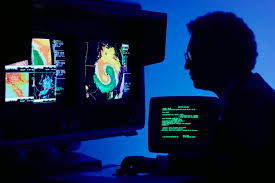
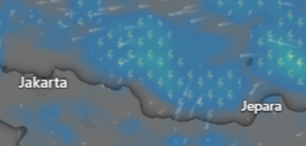
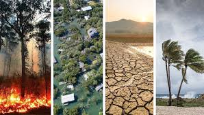
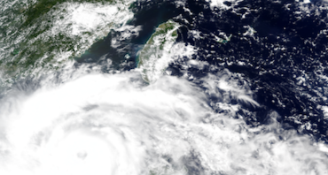
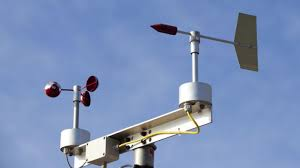

Apa itu Meteorologi?
Meteorologi adalah ilmu yang mempelajari atmosfer dan fenomena yang terjadi didalamnya. Ilmu Meteorologi mencakup analisis, pengukuran, peramalan kondisi cuaca yang mempengaruhi kehidupan di Bumi. Ilmuwan yang mempelajari meteorologi disebut meteorologist. Meteorologist mengamati, menganalisis, dan memprediksi pola cuaca serta fenomena atmosfer, seperti badai, angin, suhu, kelembapan, dan tekanan udara. Data yang mereka kumpulkan dan analisis yang mereka lakukan sangat berguna untuk berbagai kepentingan, seperti peringatan cuaca ekstrem, prakiraan cuaca harian, penerbangan, pertanian, dan mitigasi bencana. Meteorologist bekerja di berbagai lingkungan, seperti stasiun cuaca, lembaga pemerintahan, perusahaan penerbangan.
Cuaca
Cuaca adalah kondisi atmosfer saat waktu tertentu dan terjadi di tempat tertentu. Faktor-faktor yang mempengaruhi cuaca itu sendiri meliputi suhu, tekanan udara, kelembapan dan kecepatan angin. Cuaca bersifat dinamis dan dapat berubah dalam hitungan menit hingga jam. Cuaca sendiri sangat mempengaruhi aspek kehidupan sehari-hari, seperti aktivitas di luar ruangan sampai dengan perencanaan suatu kegiatan atau acara.
Iklim
Iklim adalah pola cuaca yang terjadi di suatu daerah dalam jangka waktu yang panjang, biasanya bertahun-tahun atau bahkan puluhan tahun. Iklim sendiri dibedakan menjadi beberapa seperti Contoh jenis iklim meliputi iklim tropis, iklim subtropis, iklim kutub dan iklim sedang. Iklim sangat mempengaruhi lingkungan alam, jenis-jenis tanaman dan hewan, serta kehidupan manusia di suatu wilayah.
Peramalan Cuaca
Peramalan cuaca adalah proses memprediksi kondisi cuaca di masa mendatang berdasarkan data yang tersedia. Meteorologi berhubungan erat dengan prediksi cuaca ini. Teknologi modern, seperti satelit dan radar sangat berperan dalam meningkatkan akurasi peramalan cuaca dengan memberikan informasi real-time mengenai kondisi atmosfer. Dengan demikian, peramalan cuaca yang lebih tepat dapat membantu masyarakat dalam merencanakan aktivitas sehari-hari dan mempersiapkan diri menghadapi perubahan cuaca yang mungkin terjadi.
Alat Meteorologi
Alat meteorologi adalah salah satu perangkat yang digunakan untuk mengukur dan mencatat data cuaca serta kondisi atmosfer. Data ini membantu dalam memprediksi cuaca, memahami pola iklim, dan mempelajari fenomena cuaca. Alat-alat meteorologi memainkan peran penting dalam berbagai bidang, seperti pertanian, penerbangan, dan pengelolaan bencana, karena memberikan informasi akurat untuk keputusan yang terkait dengan cuaca dan iklim. Berikut adalah beberapa alat meteorologi umum:
- Anemometer : Mengukur kecepatan angin.
- Barometer : Mengukur tekanan udara.
- Termometer : Mengukur suhu udara.
- Higrometer : Mengukur kelembapan udara.